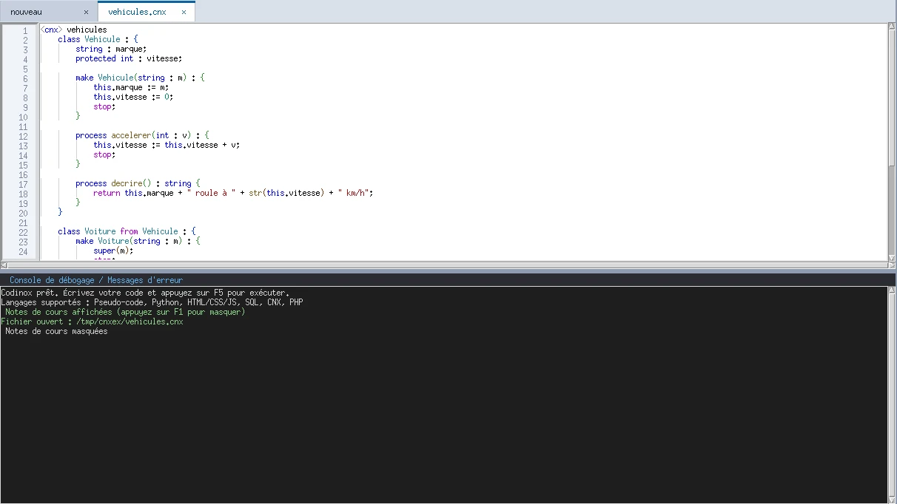
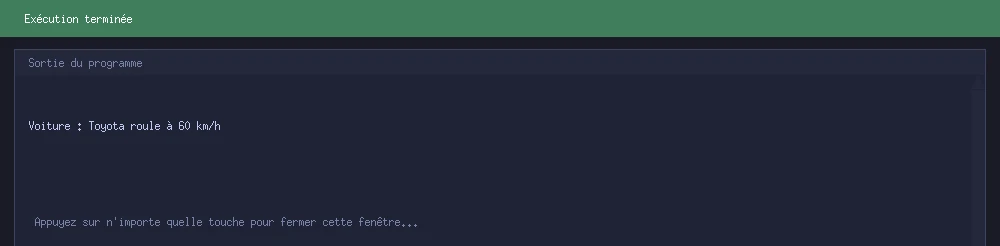
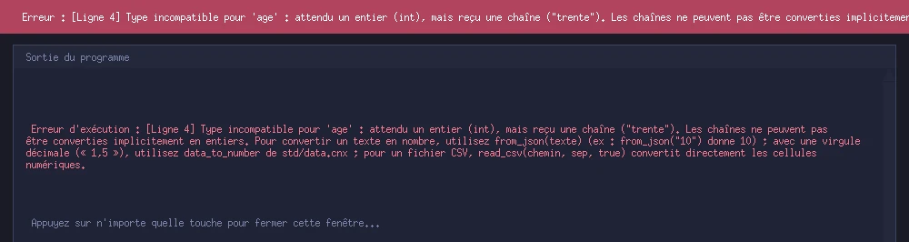
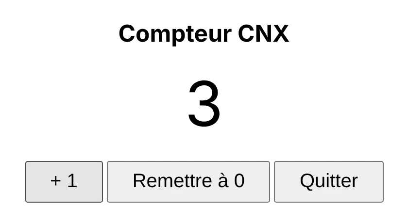

CNX : un langage lisible qui explique ses erreurs.
CNX (Code Neo X) est le langage de Codinox. Il est typé, orienté objet, et réunit les maths, le SQL, les fichiers et le Web sans rien installer de plus. Il s’écrit dans Codinox, ou s’exécute seul avec cnx et cnxw.
Gratuit · Windows et Linux · toutes les versions

Quatre idées pour un langage d’apprentissage
CNX est pensé pour qu’on comprenne ce que l’on écrit, et pour qu’une erreur serve à apprendre.
Lisible
On affecte avec :=, on affiche avec output, les blocs sont entre accolades et chaque instruction se termine par un point-virgule. Un programme tient entre <cnx> et </cnx>.
Typé
Chaque variable a un type déclaré : int, float, char, string, bool, list, dict, et const pour une constante. Une erreur de type est signalée avec la ligne et la façon de la corriger.
Orienté objet
Classes, héritage (from), constructeur (make), méthodes (process), this, super et new. La visibilité se règle avec public, protected et private.
Tout intégré
Maths symboliques, SQL (SQLite), fichiers, CSV et JSON, pages Web, et une bibliothèque standard de 130 fonctions : rien à installer pour les tâches courantes d’un cours.
Un premier programme, pas à pas
Voici un programme complet de quelques lignes, puis ce que fait chaque partie.
bonjour.cnx
<cnx> bonjour string : nom; int : age; start nom := "Alice"; age := 17; output("Bonjour $nom$, dans 10 ans : $age+10$ ans\n"); end </cnx>
Résultat
Bonjour Alice, dans 10 ans : 27 ans
- La balise
<cnx> bonjourouvre le programme et lui donne son nom ;</cnx>le ferme. - Les variables sont déclarées avant
start, avec leur type :string : nom;etint : age;. - Les instructions s’écrivent entre
startetend. :=donne une valeur à une variable, et le point-virgule termine chaque instruction.- Les signes
$…$insèrent une variable ou un calcul directement dans un texte : ici$age+10$donne 27.
Les structures du langage
Conditions, boucles, choix multiple, fonctions et gestion des erreurs : on retrouve les outils classiques, avec une syntaxe homogène.
| Pour… | On écrit |
|---|---|
| Choisir (condition) | if(x > 0) : { … } else : { … } |
| Répéter un nombre de fois connu | for(i from 1 to 10 step 2) : { … } |
| Répéter tant qu’une condition est vraie | while(n > 0) : { … } |
| Répéter au moins une fois | do : { … } until(n == 0); |
| Choisir entre plusieurs cas | by(n) : { case 0 : … default : … } |
| Sortir d’une boucle, passer au tour suivant | break · continue |
| Écrire une fonction ou une procédure | script carre(int : x) : int { return x * x; } |
| Attraper et signaler une erreur | try : { … } catch(e) : { … } · throw |
| Importer un module de la bibliothèque | import "std/stats.cnx"; |
Un exemple avec une liste, une boucle et une fonction
On additionne cinq notes, puis un script en déduit la mention.
Programme CNX
<cnx> notes list : notes; int : i; float : somme, moyenne; script mention(float : m) : string { if(m >= 16) : { return "Très bien"; } if(m >= 14) : { return "Bien"; } if(m >= 10) : { return "Passable"; } return "Insuffisant"; } start notes := [12, 15, 9, 18, 14]; somme := 0; for(i from 0 to length(notes) - 1) : { somme := somme + notes[i]; } moyenne := somme / length(notes); output("Moyenne : ", moyenne, "\n"); output("Mention : ", mention(moyenne), "\n"); end </cnx>
Résultat
Moyenne : 13.6 Mention : Passable
Attraper une erreur, choisir entre plusieurs cas
Une division par zéro est interceptée par try / catch au lieu d’arrêter le programme, puis by choisit une branche.
Programme CNX
<cnx> essai int : a, b; start a := 10; b := 0; try : { output(a div b, "\n"); } catch(e) : { output("Erreur attrapée : ", e, "\n"); } by(a) : { case 10 : output("dix\n"); default : output("autre\n"); } end </cnx>
Résultat
Erreur attrapée : [Ligne 7] Division entière (div) par zéro impossible. dix
Des exemples exécutés
Chaque programme ci-dessous a été lancé avec CNX ; les résultats affichés sont ceux obtenus.
Objets et héritage
Une classe Voiture hérite de Vehicule avec from, appelle le constructeur du parent avec super et redéfinit une méthode.
Programme CNX
<cnx> vehicules class Vehicule : { string : marque; protected int : vitesse; make Vehicule(string : m) : { this.marque := m; this.vitesse := 0; stop; } process accelerer(int : v) : { this.vitesse := this.vitesse + v; stop; } process decrire() : string { return this.marque + " roule à " + str(this.vitesse) + " km/h"; } } class Voiture from Vehicule : { make Voiture(string : m) : { super(m); stop; } process decrire() : string { return "Voiture : " + super.decrire(); } } start Voiture : ma; ma := new Voiture("Toyota"); ma.accelerer(60); output(ma.decrire(), "\n"); end </cnx>
Résultat
Voiture : Toyota roule à 60 km/h

Maths symboliques
Dériver, factoriser, développer, chercher une primitive : le calcul formel est intégré, sans bibliothèque à ajouter.
Programme CNX
<cnx> calcul start output("dérivée de x^3 + 2x : ", derive("x^3 + 2*x", "x"), "\n"); output("factorisation de x^2 - 9 : ", factor("x^2 - 9"), "\n"); output("développement de (x+1)^2 : ", develop("(x+1)^2"), "\n"); output("primitive de 2x : ", primitive("2*x", "x"), "\n"); end </cnx>
Résultat
dérivée de x^3 + 2x : 3*x^2 + 2 factorisation de x^2 - 9 : (x - 3)*(x + 3) développement de (x+1)^2 : x^2 + 2*x + 1 primitive de 2x : x^2
Base de données SQL
Une base SQLite se crée, se remplit et s’interroge directement depuis le programme.
Programme CNX
<cnx> base list : lignes; int : i; start sql_connect(":memory:"); sql_execute("CREATE TABLE eleves (nom TEXT, note REAL)"); sql_execute("INSERT INTO eleves VALUES ('Awa', 15.5), ('Koffi', 9), ('Mariam', 18)"); lignes := sql_query("SELECT nom, note FROM eleves WHERE note >= 10 ORDER BY note DESC"); for(i from 0 to length(lignes) - 1) : { output(lignes[i][0], " : ", lignes[i][1], "\n"); } end </cnx>
Résultat
Mariam : 18.0 Awa : 15.5
Bibliothèque standard : statistiques et textes
On importe un module avec import, puis on appelle ses fonctions, préfixées par le nom du module.
Programme CNX
<cnx> stats import "std/stats.cnx"; import "std/text.cnx"; list : notes; start notes := [12, 15, 9, 18, 14]; output("moyenne : ", mean(notes), "\n"); output("médiane : ", stats_median(notes), "\n"); output("écart-type : ", tofix(stats_stdev_sample(notes), 2), "\n"); output(text_slug("L'été à Cotonou : bilan 2026"), "\n"); end </cnx>
Résultat
moyenne : 13.6 médiane : 14 écart-type : 3.36 l-ete-a-cotonou-bilan-2026
Dates et nombres
Les modules std/dates.cnx et std/maths.cnx couvrent les calculs de calendrier et d’arithmétique.
Programme CNX
<cnx> dates import "std/dates.cnx"; import "std/maths.cnx"; start output("2028 est bissextile ? ", date_is_leap(2028), "\n"); output("jours en février 2028 : ", date_days_in_month(2028, 2), "\n"); output("nombres premiers jusqu'à 30 : ", to_json(math_primes_up_to(30)), "\n"); output("facteurs premiers de 360 : ", to_json(math_prime_factors(360)), "\n"); end </cnx>
Résultat
2028 est bissextile ? true jours en février 2028 : 29 nombres premiers jusqu'à 30 : [2, 3, 5, 7, 11, 13, 17, 19, 23, 29] facteurs premiers de 360 : [2, 2, 2, 3, 3, 5]
Une erreur expliquée, en français
On affecte du texte à une variable déclarée entière. CNX arrête le programme, indique la ligne, explique le problème et propose des solutions pour convertir un texte en nombre.
Programme CNX
<cnx> erreur int : age; start age := "trente"; output(age); end </cnx>
Résultat
Erreur d’exécution (erreur.cnx, ligne 4) : Type incompatible pour 'age' : attendu un entier (int), mais reçu une chaîne ("trente"). Les chaînes ne peuvent pas être converties implicitement en entiers. Pour convertir un texte en nombre, utilisez from_json(texte) […]
Une application Web en quelques lignes
Un fichier .cnxw décrit une page avec set_html, relie un bouton à un script avec click et l’affiche avec show_web. L’application s’ouvre dans le navigateur ; la fermer arrête le programme.
compteur.cnxw (version abrégée)
<cnx> compteur int : total; script incrementer() : { total := total + 1; set_text("valeur", str(total)); stop; } start total := 0; set_html("<h2>Compteur CNX</h2><div id='valeur'>0</div>" + "<button id='plus'>+ 1</button>"); click("plus", "incrementer"); show_web("Compteur CNX", 420, 360); end </cnx>
Dans le navigateur, après trois clics sur « + 1 »

Une bibliothèque standard de 130 fonctions
Six modules écrits en CNX, prêts à importer. Leurs fonctions sont préfixées par le nom du module : aucun conflit avec vos propres noms. La liste complète est dans le fichier REFERENCE.md, fourni avec CNX.
| Module | Contenu | Fonctions | Exemples |
|---|---|---|---|
std/stats.cnx | Statistiques moyenne, médiane, quartiles, écart-type, régression linéaire, corrélation, histogramme | 19 | stats_median, stats_linreg |
std/text.cnx | Textes compléter, centrer, titre, initiales, adresse web (slug), palindrome, distance de Levenshtein | 28 | text_slug, text_pad_left |
std/dates.cnx | Dates et heures année bissextile, jours dans un mois, écarts entre dates, mise en forme | 24 | date_is_leap, date_days_in_month |
std/files.cnx | Fichiers, CSV et JSON lire et écrire des lignes, ajouter à un fichier, compter les lignes | 18 | file_read_lines, file_write_lines |
std/data.cnx | Traitement de données colonnes, valeurs distinctes, effectifs, conversion de nombres | 20 | data_column, data_count_by |
std/maths.cnx | Mathématiques (entiers) nombres premiers, crible d’Ératosthène, facteurs premiers | 21 | math_is_prime, math_prime_factors |
Une erreur de paramètre déclenche une erreur claire, que l’on peut attraper avec try / catch.
CNX s’utilise aussi sans Codinox
CNX est livré comme un exécutable autonome, sans l’éditeur : même interpréteur et même bibliothèque standard que dans Codinox. Un programme écrit dans Codinox s’exécute avec cnx, et inversement.
En ligne de commande
// exécuter un programme cnx programme.cnx // vérifier la syntaxe sans l'exécuter cnx --check programme.cnx // lancer une application web cnx compteur.cnxw // arrêter les applications lancées sans console cnx --stop-all
Exemple de vérification : cnx --check bonjour.cnx répond « bonjour.cnx : syntaxe correcte. »
cnx
Exécute un script dans la console.
cnxw
Lance une application web sans fenêtre de console.
Double-clic
L’installateur propose d’associer les fichiers .cnx et .cnxw, et d’ajouter CNX au PATH pour taper cnx depuis n’importe quel dossier. Après l’installation, il faut fermer puis rouvrir les terminaux déjà ouverts.
Bon à savoir
Mode sûr
Avant d’exécuter un script reçu par Internet qui peut agir sur l’ordinateur (lancer des commandes, écrire ou supprimer des fichiers, accéder au réseau), CNX demande confirmation. Un script qui ne fait que calculer et afficher ne pose aucune question. Ce n’est pas une isolation complète : n’exécutez que des scripts de source connue.
Export JavaScript
Un programme CNX peut être converti en fichier JavaScript avec into_js. Dans ce JavaScript, les très grands entiers ne sont exacts que jusqu’à 253.
Pensé pour apprendre
CNX vise les cours, les exercices et les programmes d’usage courant, avec des messages d’erreur qui expliquent. Les notes de cours de Codinox le détaillent, à côté du code.
⬇ Télécharger CNX Télécharger Codinox Voir les tutoriels vidéo